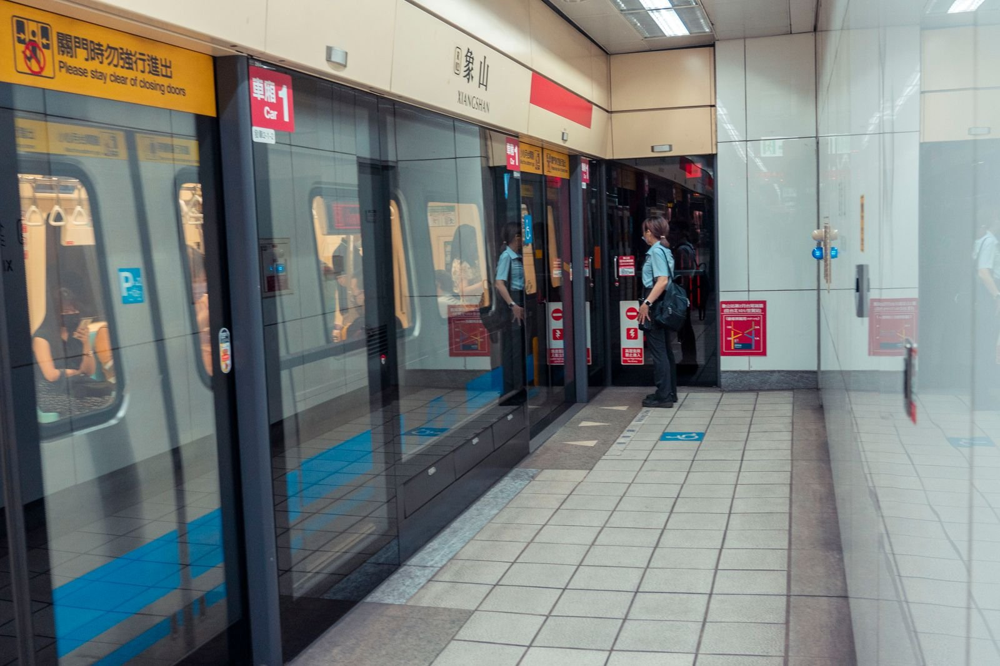

타이베이 춘절 백화점 영업, 신이 상권은 연휴에 문 열까?
춘절에 대만 가면 다 문 닫는다는 말, 신이 백화점 구간은 조금 달라요 — 작년 실적과 올해 확인법을 모았습니다.
게시
"춘절에 가면 식당이고 가게고 다 닫는다던데요?" 타이베이 춘절 백화점 영업은 동네 가게와 사정이 달라요. 시청역에서 샹산역 사이 신이 상권 백화점들은 2026년 춘절에도 제야에만 단축 영업하고 이후엔 오히려 늦게까지 열었어요. 언론 정리와 실제 여행자들의 경험을 바탕으로 정리해봤어요.
01 · 2026년 타이베이 춘절 백화점 영업 실적
| 제야(除夕), 2026년 춘절 기준 | 초1 이후, 2026년 춘절 기준 | |
|---|---|---|
| 신광미쓰코시 신이 | 11:00~18:00 단축 | 초1~초4 22:00까지 |
| 브리즈(微風) 신이 | 11:00~18:00 단축 | 초1~초5 22:00까지 |
| 타이베이 101 쇼핑몰 | 11:00~18:00 단축 | 초1~초5 22:00까지 |
| 원동백화점 신이 A13 | 매장 공지 확인 | 초1~초5 22:00까지 |
위 시간은 2026년 춘절(제야 2월 16일) 기준 언론 정리예요. 2027년 영업시간은 아직 발표되지 않았으니(2026년 9월 기준) 출발 전 각 백화점 공지를 꼭 확인하세요.
02 · 2027년 춘절 연휴 날짜
2027년 춘절 연휴는 2월 4일부터 10일까지이고, 제야는 2월 5일이에요. 제야 당일에는 가족 식사 때문에 일찍 닫는 곳이 많고, 초1부터는 나들이 인파로 백화점과 식당가가 붐비는 편이에요.

03 · 신이 상권 다니는 요령
시청역–샹산역 구간 시청역(BL18)과 샹산역(R02) 사이에 백화점이 모여 있어 걸어서 옮겨 다니기 좋아요.
식당가는 따로 확인 백화점 안 식당은 매장마다 영업시간이 다르고 예약이 필요한 곳도 있어요.
제야 저녁 식사 제야 저녁은 문 연 식당이 적으니 미리 예약하거나 숙소 근처 편의점을 대안으로 두세요.

04 · 춘절 여행, 이렇게 준비하세요
동네 식당과 시장은 초1~초3 전후로 쉬는 곳이 많아, 춘절에는 백화점·쇼핑몰 식당가를 기본 식사 장소로 두는 여행자가 많아요. 교통편과 숙소도 일찍 차니 연휴 앞뒤 이동은 미리 예약해두세요.
"춘절 타이베이는 백화점 식당가가 든든한 보험." — 연휴에 타이베이를 다녀온 여행자들의 조언을 요약했습니다.
연휴에 동네 식당이 쉬어도 백화점 주변에는 선택지가 있어요. 타이베이 맛집 지도에서 신이 일대를 보고, 딤섬을 원하면 타이베이 딤섬 맛집과 신이 매장인 가오지 신이점(KaoChi Xinyi)을 참고하세요. 연휴 영업 여부는 가게마다 달라요.
지도에서 신이 주변 맛집을 찾아보세요
연휴에도 들르기 좋은 타이베이 식당을 지도에서 확인해보세요.